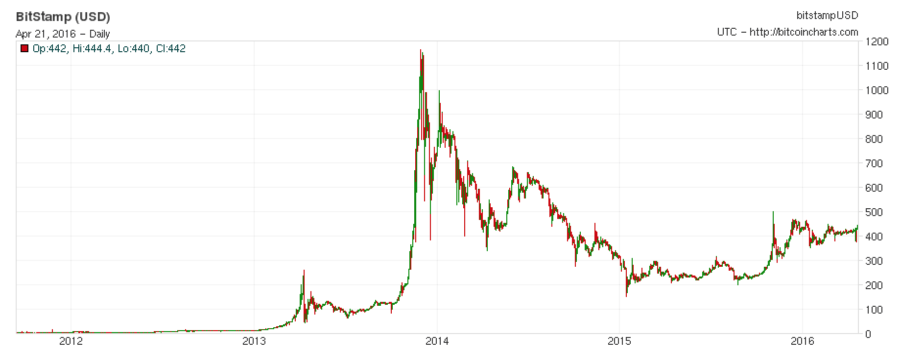
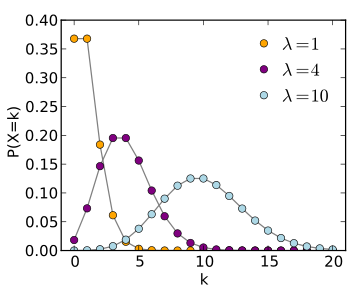

class: center, middle # Time series analysis A very selective overview --- ### 1. Time series definition (in the context of distributed system) ### 2. Modelling ### 3. Forcasting  --- # TS Layout ## Observations | timestamp | Key | Value | | --- | --- | --- | | 2016-01-01 | A | 0.1 | | 2016-01-01 | B | 0.5 | | 2016-01-02 | B | 0.6 | | 2016-01-03 | A | 0.2 | Need `groupBy` to look at a moment in time => expensive espescially in distributed system. --- # TS Layout ## Instant | timestamp | A | B | C | | --- | --- | --- | --- | | 2016-01-01 | 0.1 | 0.2 | 0.3 | | 2016-01-02 | 0.3 | 0.3 | 0.6 | Good if each row considered as an independant data point. Not so good with distributed system if you want to connect with time, e.g. expensive if previous row (time) is in a different partition. --- # TS Layout ## Row = univariate time series | dateTimeIndex | [2016-01-01, 2016-01-02, ...]| | --- | --- | | **Key** | **Series** | | A | [0.1, 0,2, 0.3] | | B | [0.3, NaN, 0.6] | In many applications, a single time series will easily fit in memory. --- # Selected topics of Time series ### Counting time series ### Modelling ### Forcasting --- ## Counting time series Examples: - Number hospital admissions per day - Number of particle emmitted per second by radiative material - Number of clicks per day All of the above have a different model of production, but they all comprise **non-negative** number of event. --- ## Counting time series ####(Generalized) Linear Model (G)LM Well defined model assesment and forcasting ####(integer) Auto Regressive Moving Average ARMA Flexible management of the past --- ## Linear model To put it simply: linear models relates parameters in a linear way. --- ### Poisson distribution Ordinary regression of linear model does not take into account the discret nature of counting (e.g. there is no fractional clicks). A natural starting point is the **Poisson distribution**. Poisson distribution models the probability of the number of events=`\(y\)` for a given random value $$P(Y=y) = \frac{\lambda^{y}e^{-\lambda}}{y!}$$ where `\(\lambda\)` is the mean rate for the given interval and y = 1,2,3...  * Note1: mean and variance happen to both be `m` for Poisson. * Note2: The sum of 2 (independant) poisson process is also a poisson process --- ### Warning about data sample size: The poisson distribution is actually a limiting form of the **binomial** distribution with mean `\(\lambda = N*p\)` where `\(N\)` is the number of trial and `\(p\)` the probability. There are 3 possibilities: - `N` is small: Then go with the actual binomial - `N` and `p` are large : use the gaussian, integers can be considered continuous when numbers are large. - Rule of thumb : `N>30` and `p > 0.05` - `N` large and `p` small : use Poisson Concretly, `N` could be the number of impressions and `p` be the probability of getting a click. The typical numbers of impressions and clicks fits the predicate of Poisson distribution. --- ## Poisson regression Suppose we have `n` events with value `\( y_i = \{y_{1}, y_{2}... y_{n}\} \)` We want to find a linear parameter `\(\beta_{i}\)` mapping the time to get the mean `\(\lambda_{i}\)` ### Simple linear model $$\lambda_i = \beta_i * x_i $$ Does not exclude negative average. ### log-linear model $$log(\lambda_i) = \beta_i * x_i $$ here, the mean is never negative --- ## Generalized Linear model (GLM) The last example is a case of GLM which consists of 1. A **probability distribution** - Depends on the underlying population - e.g. Poisson 2. A **linear predictor** `\(\eta = X\beta\)` - Relates the independent variables `\(X\)` with the parameters `\(\beta\)` 3. A **link function** - Relates the predictor with the mean of the distribution, for Poisson it is `\(\eta = log(\lambda)\)` Note: logistic regression is also a GLM with link function `\( X\beta = \frac{\lambda}{1-\lambda} \)` --- ## Beyond Generalized linear model ### Generalized Additive Models - GLM with **predictor** possibly **non-linear** of unknown smooth functions (allowing more flexibility without overfitting) - More info in this stitch fix [blog entry](http://multithreaded.stitchfix.com/blog/2015/07/30/gam/) --- ## Autoregressive modelling Linear model above are taking every event as independent measurement, autoregressive models allows to use history in a controlled manner. --- ## Autoregressive modelling linear dependence on previous values => **forcasting** ### Autoregressive AR(p): `\(Y_{t} = C + \sum^{p}_{i=1} \phi_i Y_{t-p} + \epsilon _t\)` --- ## Autoregressive modelling linear dependence on previous values => **forcasting** ### Autoregressive AR(p): `\(Y_{t} = C + \sum^{p}_{i=1} \phi_i Y_{t-p} + \epsilon _t\)` ### Moving average MA(q) : `\(Y_{t} = m + \epsilon _t\ + \sum^{q}_{i=1} \theta_{i}\epsilon_{t-q}\)` --- ## Autoregressive modelling linear dependence on previous values => **forcasting** ### Autoregressive AR(p): `\(Y_{t} = C + \sum^{p}_{i=1} \phi_i Y_{t-p} + \epsilon _t\)` ### Moving average MA(q) : `\(Y_{t} = m + \epsilon _t\ + \sum^{q}_{i=1} \theta_{i}\epsilon_{t-q}\)` ### Autoregressive moving average ARMA `\(Y_{t} = C + \sum^{p}_{i=1} \phi_i Y_{t-p} + \sum^{q}_{i=1}\theta_{i}\epsilon_{t-q} + \epsilon _t \)` Also **ARIMA** (*I* for integrated) adds an initial differencing step to reduce non-stationarity see [this](initial differencing step) for more detail --- # Tools - R - HUGE list of libraries see [list](https://cran.r-project.org/web/views/TimeSeries.html) - spark ts (very new) - extends `rdd: RDD[String, Vector[Double]` - from [documentation](http://sryza.github.io/spark-timeseries/0.3.0/index.html) - Exponentially weighted moving average (EWMA) models - Autoregressive integrated moving average (ARIMA) models - Generalized autoregressive conditional heteroskedastic (GARCH) models (ARMA model for the variance) - Python - did not investigate much but looks less mature than R -[statsmodel](http://statsmodels.sourceforge.net) --- # Final note ### Why are we talking about time series? - Need to make predictions on the click trends - Because in YP contact, we receive the information as clicks per day (at least for SEM). - Maybe usefull in run of site (run of site): an add is always shown on a given site (no premium, bidding) ### Is this how we want to tackle predictions? - How about predicting is a given ad will turn into a click/contact? `\(P(Click | X)\)` Then we can make a different prediction: Send `N` ads of type `A` and you will receive `\(Y \pm \sigma_{Y}\)` clicks --- # Further subject to study ## Gaussian processes http://www.robots.ox.ac.uk/~sjrob/Pubs/philTransA_2012.pdf http://www.rogerfrigola.com/doc/thesis.pdf http://stat.columbia.edu/~cunningham/pdf/CunninghamAISTATS2012.pdf https://papers.nips.cc/paper/2783-gaussian-process-dynamical-models.pdf ## causal impact http://multithreaded.stitchfix.com/blog/2016/01/13/market-watch/ and this ref within http://people.ischool.berkeley.edu/~hal/Papers/2013/pred-present-with-bsts.pdf --- # fin --- Some references https://www.u-cergy.fr/_resources/Documents%2520SDRV/documents%2520IEA/Fokianos_CTSM.pdf http://www.planta.cn/forum/files_planta/glm_2002_crc_213.pdf